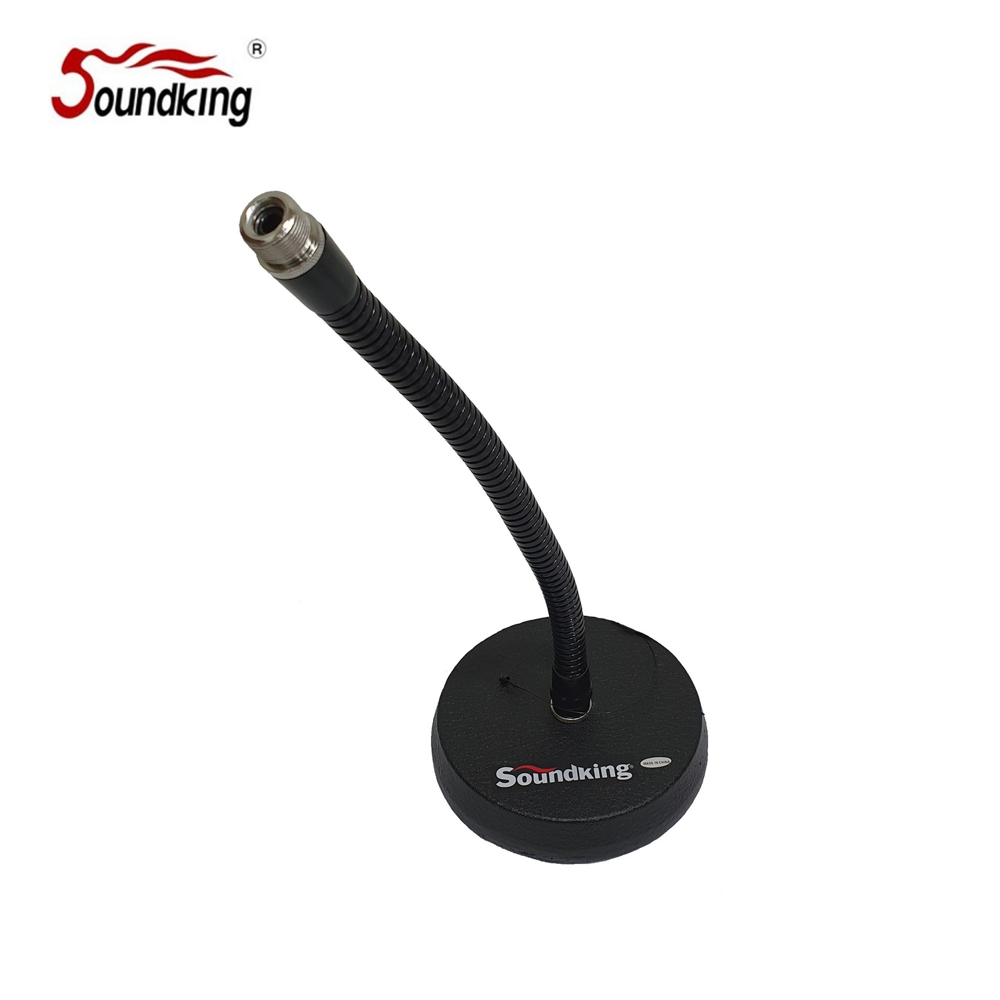

DD043H는 컴팩트한 구스넥 데스크톱 마이크 스탠드입니다. 315 mm 높이의 단단한 베이스에 Φ15 mm × 300 mm 구스넥이 장착되어, 안내 데스크 · 카운터 · 포디움 등에서 고정 위치 수음이 필요한 환경에 최적화되었습니다. 3 kg의 묵직한 받침 덕분에 구스넥이 휘어도 스탠드가 흔들리지 않습니다.

안내 데스크 · 포디움 · 카운터 용도에 적합한 컴팩트 구스넥 마이크 스탠드. 묵직한 베이스와 유연한 구스넥으로 고정 포지션 수음을 안정적으로 지원합니다.
DD043H는 전체 높이 315 mm의 소형 데스크톱 스탠드에 Φ15 mm × 300 mm 길이의 구스넥을 결합한 제품입니다. 구스넥의 유연한 각도 조절이 가능하여 마이크 캡슐을 발화자의 입 방향으로 정확히 향하게 설정할 수 있으며, 설정한 각도가 안정적으로 유지됩니다.
받침 베이스 130 mm와 3 kg의 묵직한 중량으로 구스넥이 구부러졌을 때도 스탠드가 쓰러지지 않으며, 고정 포지션에서 장시간 사용해도 위치가 흐트러지지 않습니다. 회의실 테이블 · 안내 데스크 · 포디움에서 자주 활용됩니다.
| 모델명 | DD043H |
|---|---|
| 타입 | Compact Gooseneck Desk Mic Stand |
| Height | 315 mm |
| Base Length | 130 mm |
| Gooseneck | Φ15 mm × 300 mm |
| Net Weight | 3 kg |
| 권장소비자가 | 30,800 원 / 개 (VAT 포함) |
※ 본 사양 · 단가는 수입원(현대에이브이씨) 2026-01-01 스탠드 가격표 기준입니다.